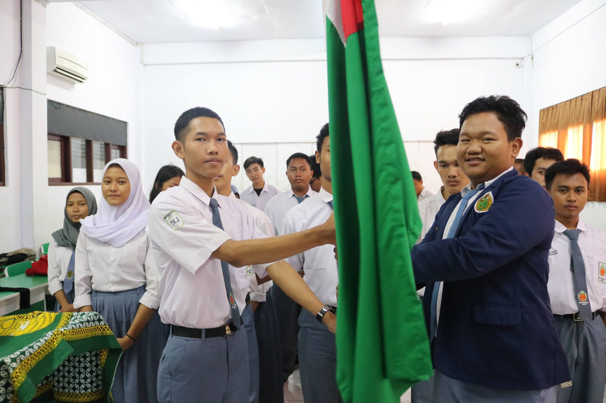

PPTS
PPTS atau Persatuan Pelajar Tamansiswa adalah sebuah organisasi kesiswaan yang ada di Tamansiswa. Organisasi ini berdiri pada tahun 1927.
Dahulu sebenarnya organisasi ini bernama Mulo Kweek School Vereenigning. Kemudian berganti menjadi Persatuan Pemuda Tamansiswa dan sekarang disebut Persatuan Pelajar Tamansiswa. Pada dasarnya organisasi PPTS sama halnya seperti Organisasi Siswa Intra Sekolah (OSIS) di sekolah lain. Maksud, tujuan dan fungsi PPTS sama dengan OSIS, hanya saja penyebutannya yang berbeda dengan sekolah lain. Kepo dengan PPTS SMK Tamansiswa 2 Jakarta / TKMT???
- VISI PPTS:
Menjadi pelajar yang peduli terhadap pengembangan kualitas di bidang kerohanian, pengabdian masyarakat, pelajaran, dan perkembangan teknologi terkini. Meningkatkan kualitas SMK Tamansiswa 1 Jakarta, membentuk kepribadian siswa-siswi SMK Tamansiswa 1 Jakarta yang SMART (Sigap, Musyawarah, Adil, Religius, Teliti).
- MISI PPTS:
1. Memaksimalkan peran siswa-siswi SMK Tamansiswa 1 Jakarta dalam menjaga kebersihan lingkungan.
2. Membantu meningkatkan minat siswa-siswi dalam ekstrakulikuler sekolah.
3. Meningkatkan mutu kerja PPTS SMK Tamansiswa 1 Jakarta.
- WANNA JOIN US?
Klik dibawah ini.
Contact Us